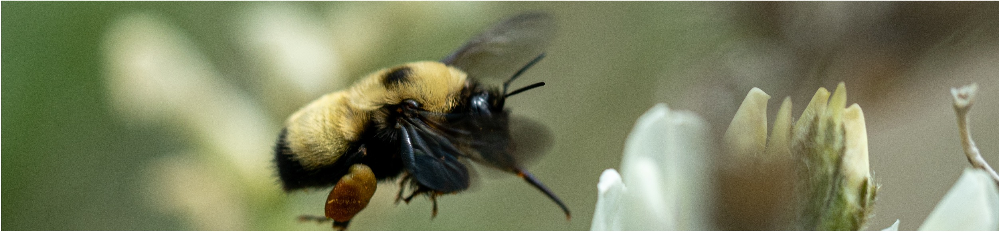

Locoweed Volatiles

Note: This project is still a work in progress.
INTRODUCTION
Astragalus and Oxytropix species, part of the Legume Family, are found in terestrial ecoysstems globally, including the western regions of North America. Many of these species are both nontoxic and important forages. However, several species are known to be toxic to both livestock and wildlife. Oxytropis sericea Nutt can harbor a commensal endophyte, Alternaira oxytropos, a fungus that is assocaited with locoweed plants, specifically those of the genus Oxytropis. Plants containing the endophyte have been found to produce swansonine, a toxic alkaloid that can be harmful to livestock when ingested in large quantities (Song et al. 2019). In this study, we investigated the potential differences in volatile organic compound (VOC) emissions between specimens that contained the commensal endophyte Alternaria oxytropis, and those that did not.
These data consist of volatile collection events over the course of two years, 2022 and 2023. In both years, data was collected from wild plants in the field, and plants grown in the greenhouse.
METHODOLOGY
Data Collection
Field Volatile Collection
Volatile collected was undergone on plants grown at a 34 x 60 ft plot at the Arthur H. Post Agronomy Farm (43°38’19.39”N, 116°14’28.86”W), an extension research station of Montana State University in Bozeman, MT. Plants were inventoried and logged using GPS, and tissue samples from each specimen were analyzed to establish whether the plant contained the endophyte. Volatiles were collected from all the plants in each year over the course of one to two successive weeks.
Volatile were collected from 20 plants per day by placing Reynolds Turkey Oven Bags (Reynolds Group Holdings, Auckland, New Zealand) over the top of the selected number of leaflets.
Greenhouse Volatile Collection
Samples of each plant were first sent for analysis to mystery lab to see if endophyte was present or not. Volatile compounds were collected from healthy (size/stage) locoweed plants. Plants were paired based on size similarity, with one being E+ and the other E-. Three sets of pairs (twelve plants) were used for each volatile collection event. Collection was undergone for a period of six hours from 09:00 to 15:00.


Greenhouse Volatile Collection Plants looked like this.
Volatiles were collected from twleve plants per day using glass volatile collection chambers (VCCs) that were 30 cm long and 4 cm in diameter. The top end of each VCC funneled into a threaded port that was 10 cm in daimter. Threaded onto the top of each VCC was an eight-port “octopus” manifold adapter. Two glass filter traps (6.35 mm diameter x 76 mm length; Analytical Research Systems, Gainesville, FL) with 30 mg of Super-Q absorbent (Alltech Associates, Deerfield, IL) were inserted into two of the adapter ports. The remaining six collection ports were sealed to prevent ambient air exchange and pressure loss. One of the traps was used to collected extraneous volatiles from the initial experiment set up for the first ten minutes, whereas the other trap was used to collect volatile compounds emanating from plants beginning ten minutes after the system was turned on. An air source was connected to the base of each collection chamber with supply from charcoal air filters. A vacuum pump was used to maintain air pressure and flow rate (humidified air at 1.0 liter/min) within the collection system. A small piece of cotton encompassed by a Teflon® guillotine was used at the base of each plant to tightly seal the base of the system and prevent external air from entering. Laboratory tape was used to seal the edges of the guillotine and prevent contamination by ambient and soil derived volatiles.
Volatile collection and successive GC-MS analysis were conducted following methods described in Weaver et al. (2009). After the six hour collection period, glass volatile collection traps were eluted using 200 µL of dichloromethane into 2 mL screw top vials (Agilent Technologies, Inc., Santa Clara, CA), followed by a slow release of nitrogen to further clear the volatile trap. 10 µL of nonyl acetate solution was added to the eluted solution as internal standard to quantify compounds. Samples were then subject to gas chromatography (GC) on a J&W HP – 5ms; 30m x 0.25 µm film thickness column (Agilent Technologies, Inc., Santa Clara, CA). The GC unit (Agilent 6890; Agilent Technologies, Santa Clara, CA) was paired with a mass spectrometer (MS, Agilent 5973 instrument). Samples were injected into the column in pulse splitless mode, with the initial pressure of 82.7 kPa/m.
Data Analysis
The data analysis procedure for each collection type was the same. Statistical analyses were conducted in R (R Core Team 2024) using RStudio (version 4.2.1) using PERMANOVA, PERMDISP, and Random Forest modeling. The data was first transformed using a center log-ratio (CLR) transformation, a technique commonly used when analyzing multivariate compositional data (Brückner and Heethoff 2017). VOC compositions were compared between samples and treatments using a permutational multivariate analysis of variance (PERMANOVA, Canberra distance, 999 iterations) tests implemented in the vegan package (v 2.6-4) (Oksanen et al. 2011). This technique uses permutation testing to generate many different rearrangements of the data to assess if the observed differences are statistically significant (Anderson 2017). Data were visualized using a combination of ggplot2 and knitr (Wickham 2016; Xie 2021). I selected a subset of comounds to ues for each analysis. These compounds were seelcted based on consistency of presence across samples and years, as well as overall quality of mass spectroscopy output. I will highlight the cmopounds that I used for each analysis as I get to them.
RESULTS
Field Volatile Collection
Boxplot Comparison
PERMANOVA
The locoweed samples, both SWA + and SWA -, exhibited numerous chromatogram peaks during collection. However, only volatile compoudns showing significant peaks inthe mass spectroscopy output or presenting differences in the overlays of the two SWA types were chosen for analysis.
There was no interaction between plant species and data of volatile collection.
Our results show weak evidence of a difference between SWA+ and SWA- locoweed plants (p-val = 0.11).
Greenhouse Volatile Collection
Boxplot Comparison

PERMANOVA
Permutation test for adonis under reduced model
Terms added sequentially (first to last)
Blocks: strata
Permutation: free
Number of permutations: 999
adonis2(formula = gh.permanova.data ~ gh.data.per.meta$swa, permutations = 999, by = "terms", strata = interaction(gh.data.per.meta$pair, gh.data.per.meta$year))
Df SumOfSqs R2 F Pr(>F)
gh.data.per.meta$swa 1 0.0682 0.01078 1.2096 0.042 *
Residual 111 6.2562 0.98922
Total 112 6.3244 1.00000
---
Signif. codes: 0 '***' 0.001 '**' 0.01 '*' 0.05 '.' 0.1 ' ' 1Our results show moderate evidence of a difference between SWA+ and SWA- locoweed plants (p-val = 0.042).
Data Overview
APPENDIX
| plant.id | bocimene | z3hex | nonanal | swa |
|---|---|---|---|---|
| 371 | 2.00 | 2.01 | 2.00 | 1 |
| 774 | 2.00 | 2.00 | 2.00 | 0 |
| 101 | 1.81 | 1.93 | 5.13 | 0 |
| 431 | 1.73 | 2.72 | 3.51 | 1 |
| 394 | 2.00 | 2.00 | 3.23 | 1 |
| 1172 | 2.00 | 2.19 | 3.41 | 0 |
References
Anderson, Marti J. 2017. “Permutational Multivariate Analysis of Variance (PERMANOVA).” In Wiley StatsRef: Statistics Reference Online, 1–15. Chichester, UK: John Wiley & Sons, Ltd.
Brückner, Adrien, and Michael Heethoff. 2017. “A Chemo-Ecologists’ Practical Guide to Compositional Data Analysis.” Chemoecology 27: 33–46. https://doi.org/10.1007/s00049-016-0227-8.
Oksanen, Jari, L. Gavin Simpson, F. Guillaume Blanchet, and Roeland Kindt. 2011. “Ordination Methods, Diversity Analysis and Other Functions for Community and Vegetation Ecologists.”
Song, Runjie, Jinglong Wang, Lu Sun, Yajing Zhang, Zhenghui Ren, Baoyu Zhao, and Hao Lu. 2019. “The Study of Metabolites from Fermentation Culture of Alternaria Oxytropis.” BMC Microbiology 19 (1). https://doi.org/10.1186/s12866-019-1408-8.
Wickham, Hadley. 2016. Ggplot2: Elegant Graphics for Data Analysis. Springer-Verlag New York. https://ggplot2.tidyverse.org.
Xie, Yihui. 2021. “Knitr: A General-Purpose Package for Dynamic Report Generation in R.” https://yihui.org/knitr/.